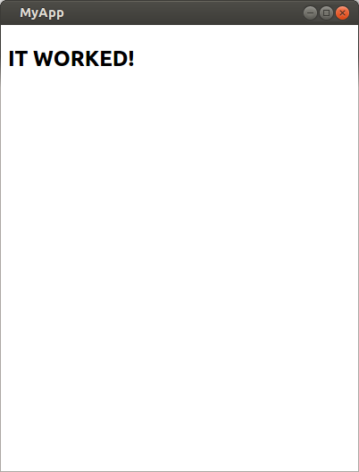

Take browserify - A tool that enables node.js style require('') in the browser.
Mix it with Chrome Apps - A way to build native applications using HTML5 JS and CSS technologies.
Sprinkle in some wonderful open source libraries
And finally dust with a Chrome App to mobile convertor
And you have a compelling platform to deliver robust mobile and desktop solutions that put offline and performance as a first tier requirement.
This section will show you the basics of using chromiumify. We will create a small chrome app and run a HTTP server from it. The code we will use is available in the repo but you shouldn't need to refer to it.
First lets create a chrome app project. At the command prompt run the following commands.
mkdir demoappcd demoappchromiumify gen .Now we should be able to run the application.
chromiumify run .. means the current directory in the above commands.
Your application should now look like this
| Feross Aboukhadijeh | GitHub/feross | Twitter/@feross |
|---|---|---|
| Jan Schär | GitHub/jscissr | Twitter/@jscissr |
| Michał Sobkiewicz | GitHub/perceptron8 | Twitter/@perceptron8 |
| James Halliday | GitHub/substack | Twitter/@substack |
| Anton Whalley | GitHub/no9 | Twitter/@dhigit9 |
Like chromiumify and want to tweet it, share it, or star it? We appreciate that <3
Tweet